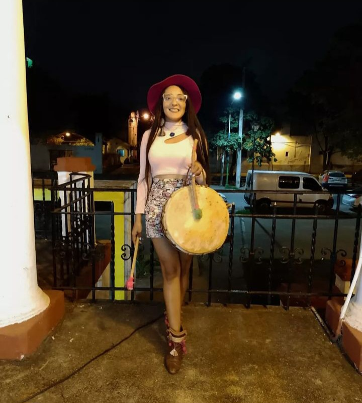

¿Quien soy?
Soy Judith Zurita , soy Tafinista, criada en la zona del Rodeo Grande, cuna de la agricultura en Tafí del Valle. La copla y la caja son parte de mi vida desde niña , la copla era algo cotidiano entre mí familia materna. Mi abuela coplera , mi mamá coplera y grandes mujeres hacedoras de cultura del valle . En mi sangre recorre el canto ancestral de varias generaciones , porque todas las mujeres de mi familia fueron copleras, no copleras de escenarios , copleras de cerros , valles , quebradas , que mientras cuidaban su rebaños de ovejas, sembraban sus tierras, hilaban y tejían con sus lanas, se acompañaban del canto nativo . No encuentro una palabra que pueda definir que significa para mí, ser coplera . Creo que aún no encontré esa palabra exacta. Porque mis sentires son tan grandes que no hay una palabra para expresarlo . Pero puedo decir que para mí, cantar es orgullo, es libertad , es lucha , es reivindicación, es resistencia. Con cada golpe de mi caja me conecto a mis ancestras, mi cuerpo siente esa conexión, la siento en mi sangre , en los latidos de mi corazón, en los latidos de mi útero . Mis coplas hablan de mis penas , de mis alegrías y de mis luchas . También canto coplas que he aprendido y que han cantado las mujeres de mi familia, mujeres que yo no llegué ha conocer, pero que a través del canto las traigo a mi vida , las traigo hoy al presente . Cantar junto a mi abuela, a mi mamá ,a mis tías y tíos , es un privilegio que la Pacha me regala , me siento una bendecida . Siempre canto con ganas, con amor , con orgullo porque sé que a través del canto estoy honrando a mis ancestras y a mi Pacha. Como dice la copla.. "Canten , canten con gana , pa' que se alegre la Pachamama".
